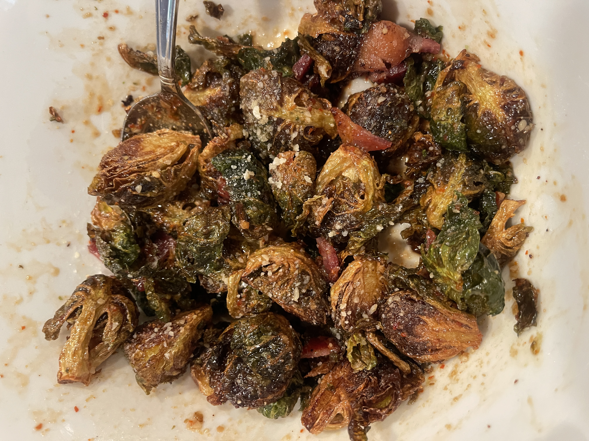

fried brussels sprouts!!!
we fried up some fried brussels with a homemade balsamic based marinade and topped with parmesan and bacon - 9.9/10
ingredients
- brussels sprouts, cut in half
- bacon
- parmesan
- balsamic vinaigrette
- maple syrup
- red pepper flakes
- seasonings to taste
steps
- clean and cut brussels, set aside to fully dry
- prepare a marinade of balsamic, maple syrup, red pepper flakes, and seasoning
- fry some bacon and set aside, to cut into crumbles
- fry brussels in shallow oil under dark brown and fragrant
- toss fried brussels in marinade, cover in bacon + parmesan, and enjoy!